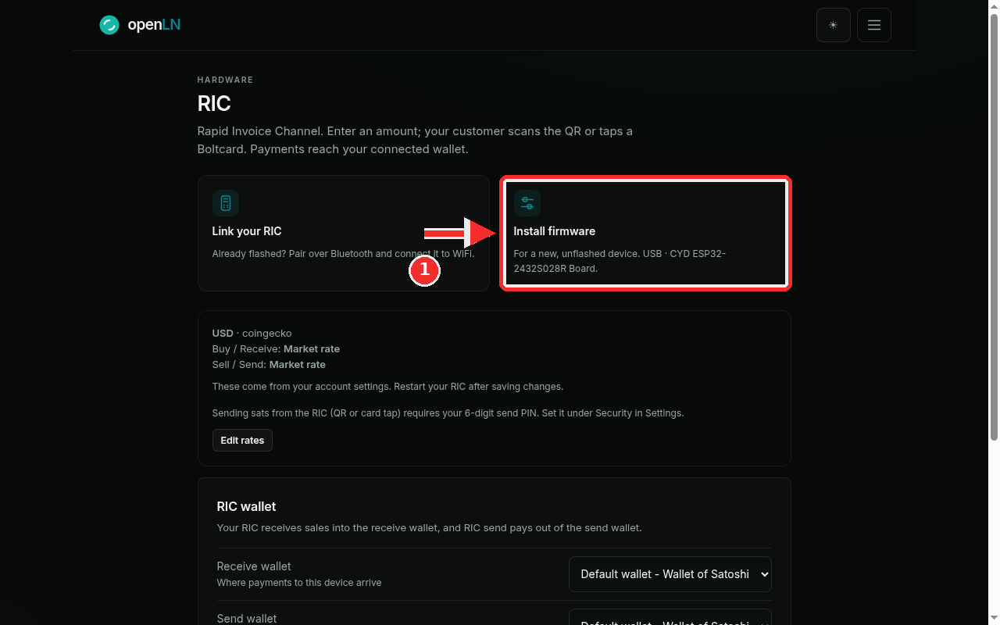
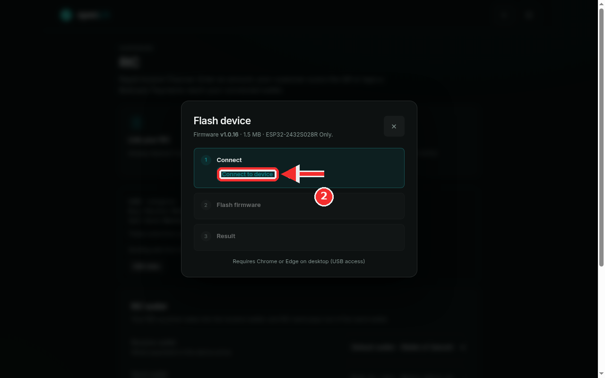
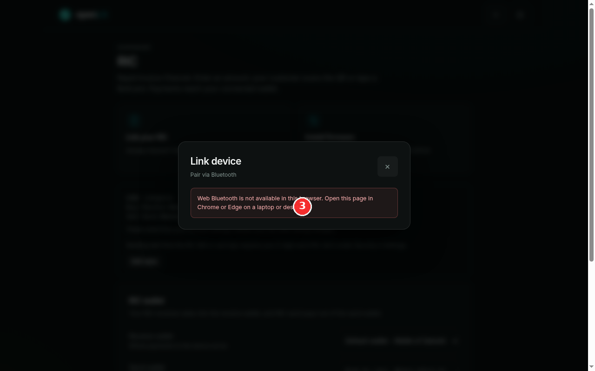

How to flash and link your RIC
The RIC is openLN’s counter terminal: the small touchscreen device that sits at your till, shows the payment QR, and lets customers tap a Bolt card. Out of the box it does not run openLN yet, and two setup jobs stand between it and its first sale: writing the openLN firmware onto it (called flashing), and attaching it to your account and WiFi (called linking). Both jobs run from the RIC page in the openLN app on a computer, and this guide walks through them in order.
- You are signed in to your openLN account in Chrome or Edge on a laptop or desktop. Flashing uses USB access and linking uses Bluetooth; iPhone and iPad can do neither.
- Your RIC device and a USB cable to connect it to the computer.
- The WiFi network name (SSID) and password of the network the RIC will use at the counter, for the linking step.
- Nothing is charged during setup and no funds move.
Open the RIC page and pick the right tile
In openLN, open the RIC page from the menu (the entry hinted “Your counter devices”). Under the Hardware heading, two tiles sit at the top, one for each setup job:
Install firmware is for a new, unflashed device. The tile’s own words: “For a new, unflashed device. USB · CYD ESP32-2432S028R Board.” If your RIC has never had openLN on it, this is your path, and it is the one marked with the red 1 in the screenshot.
Link your RIC is for an already flashed device. That tile says: “Already flashed? Pair over Bluetooth and connect it to WiFi.” If your RIC already runs openLN, you can skip the flashing step and go straight to step 3.
If you are not sure which one applies: a device that has never been flashed will not appear in the linking scan, so when in doubt, start with Install firmware. A flash always ends with a device that is ready to link.

Flash a new device from the Flash device dialog
Click Install firmware. The Flash device dialog opens. Its header line tells you exactly what is about to be written: firmware v1.0.16 · 1.5 MB · ESP32-2432S028R Only. That version comes from openLN’s current release, so it may be newer than this screenshot shows. One thing to check on your own device: it must be the ESP32-2432S028R board (the CYD screen board). The ESP32-S3 and ES3C28P variants are refused, and nothing is written to them.
The dialog then takes you through its three numbered steps:
- 1 Connect. Plug the RIC into the computer with the USB cable, then click Connect to device (marked with the red 2 in the screenshot) and pick the RIC’s port in the browser’s port picker.
- 2 Flash firmware. Click Flash firmware. Before anything is written, the app checks the board really is an ESP32 and verifies the firmware image byte for byte, so a wrong board or a bad download is stopped instead of written. The bar then fills with the write progress and the line under it counts up in percent (
42% writtenand so on). Do not unplug the cable while it is writing; wait until it reads 100% written. - 3 Result. The dialog finishes with Firmware v1.0.16 installed and one instruction: power-cycle the device by unplugging the USB cable and plugging it back in. It starts up in Bluetooth setup mode, ready for the next step.
One small line under the checklist is the requirement for this whole step: Requires Chrome or Edge on desktop (USB access). If you open the RIC page in some other browser, the dialog shows a warning instead of the Connect button and tells you to open the page in Chrome or Edge on desktop; do that, plug the RIC back in, and start again.

Link the RIC to your account and WiFi
With the RIC powered up again, open the RIC page and click Link your RIC. The Link device dialog opens, subtitled Pair via Bluetooth. It pairs the RIC over Bluetooth and connects it to WiFi in one flow, again with three numbered steps:
- 1 Connect. Click Scan for nearby device and pick your RIC in the browser’s chooser. The device advertises as RIC-XXXX (the same name shown on its screen); devices running older firmware show up as posBOX or RIC.
- 2 WiFi credentials. Type the network name (SSID) and the password of the WiFi the RIC should use at the counter, then click Provision device. openLN sends the WiFi details and an account token to the device over Bluetooth.
- 3 Result. The device restarts, joins the WiFi and calls home. Keep the dialog open: when its first authenticated call arrives the step turns green with RIC linked to your account. The dialog watches for up to two minutes; if the device has not come online by then, check the network name and the password and run the pairing again.
Linking needs Web Bluetooth, which means Chrome or Edge on a laptop or desktop. It does not work on iPhone or iPad, where Apple blocks Web Bluetooth in every browser. If the page cannot use it, the dialog shows a note in place of the scan button: “Web Bluetooth is not available in this browser. Open this page in Chrome or Edge on a laptop or desktop.” The screenshot shows that note, marked with the red 3. On a supported computer you get the checklist and the scan button instead.
After linking, the device appears under Linked devices on the RIC page with an online status, the installed firmware version and its health details. Your RIC is set up.

Once linked, the RIC runs on its own touchscreen: the amount pad, the QR payment screen, card taps, card issuing and wiping, the pairing beacon, WiFi connect and the firmware update screens. The RIC screens gallery collects every one of them, frame by frame, rendered from the firmware itself.
Open the RIC screens gallery- One RIC per counter. Plan on one device per till: a second counter gets its own RIC, set up with the same steps in this guide.
- It fetches its next unwritten card by itself. When you issue a card from the RIC, the device pulls the next queued, unwritten card from your account automatically. Queue the card in openLN first; there is no QR to scan and no keys to type on the device.
- Its settings come from your account. The currency, the buy and sell rates, and the wallets the RIC uses are read from your account settings, not typed on the device. After changing any of them in openLN, restart the RIC (power it off and on) so it picks up the new values.
- Not sure what the device is showing? The RIC screens gallery labels every screen, from the amount pad to the pairing and update animations.